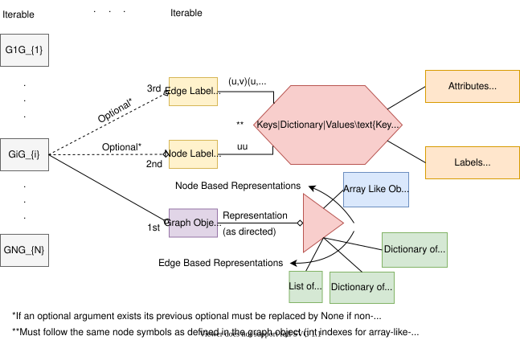

A Short Introduction#
What is GraKeL?#
The problem of accurately measuring the similarity between graphs is at the core of many applications in a variety of disciplines. Graph kernels have recently emerged as a promising approach to this problem. GraKeL is a library that provides implementations of several well-established graph kernels, unifying them into a common framework. The library is written in Python following scikit-learn’s philosophy. GraKeL makes it easy to build a complete machine learning pipeline for tasks such as graph classification and clustering.
What is a Graph Kernel?#
A graph kernel is a symmetric, positive semidefinite function on the set of graphs \(\mathcal{G}\). Once we define such a function \(k : \mathcal{G} \times \mathcal{G} \rightarrow \mathbb{R}\) on the set \(\mathcal{G}\), it is known that there exists a map \(\phi : \mathcal{G} \rightarrow \mathcal{H}\) into a Hilbert space \(\mathcal{H}\), such that:
for all \(G_i, G_j \in \mathcal{G}\) where \(\langle\cdot, \cdot\rangle_{\mathcal{H}}\) is the inner product in \(\mathcal{H}\). Roughly speaking, a graph kernel is a function that measures the similarity of two graphs.
Creating a Graph#
A graph is used to model a set of objects (i.e., nodes) and the relationships between them (i.e., edges). A single graph in GraKeL is described by an instance of grakel.Graph. Traditionally, the two main structures used to represent a graph are the adjacency matrix and the list of edges. Both these representations can give rise to valid graph objects. The following Figure illustrates an unweighted, undirected graph with three nodes and two edges, and we show how we can generate graph objects that correspond to this example graph using the two representations mentioned above. Note that the graph has only two edges, however, we need to define four edges to account for both directions of each edge.
{kind=link}
Edgelist representation:
- A dictionary keyed by node to the list of its neighbors.
edges = {1: [2, 3], 2: [1], 3: [1]} G = Graph(edges)
- Iterable of tuples of lenght 2. Each tuple corresponds to an edge.
edges = [(1, 2), (1, 3), (2, 1), (3, 1)] G = Graph(edges)
Adjacency matrix representation:
- Array-like lists of lists.
adj = [[0, 1, 1], [1, 0, 0], [1, 0, 0]] G = Graph(adj)
- NumPy array.
adj = numpy.array([[0, 1, 1], [1, 0, 0], [1, 0, 0]]) G = Graph(adj)
- Scipy sparse matrix.
adj = scipy.sparse.csr_matrix(([1, 1, 1, 1], ([0, 0, 1, 2], [1, 2, 0, 0])), shape=(3, 3)) G = Graph(adj)
A graph is directed if its edges have a direction associated with them. The Figure below shows an directed, unweighted graph with three nodes and three directed edges.
{kind=link}
Edgelist representation:
- A dictionary keyed by node to the list of its neighbors.
edges = {1: [3], 2: [1], 3: [1]} G = Graph(edges)
- Iterable of tuples of lenght 2. Each tuple corresponds to an edge.
edges = [(1, 3), (2, 1), (3, 1)] G = Graph(edges)
Adjacency matrix representation:
- Array-like lists of lists.
adj = [[0, 0, 1], [1, 0, 0], [1, 0, 0]] G = Graph(adj)
- NumPy array.
adj = numpy.array([[0, 0, 1], [1, 0, 0], [1, 0, 0]]) G = Graph(adj)
- Scipy sparse matrix.
adj = scipy.sparse.csr_matrix(([1, 1, 1], ([0, 1, 2], [2, 0, 0])), shape=(3, 3)) G = Graph(adj)
A graph is weighted if its edges have weights. The Figure below shows a weighted, undirected graph with three nodes and two edges.
{kind=link}
Edgelist representation:
- A dictionary keyed by nodes to a dictionary keyed by neighbors to edge weights.
edges = {1: {2: 0.5, 3: 0.2}, 2: {1: 0.5}, 3: {1: 0.2}} G = Graph(edges)
- A dictionary keyed by edges to their weights.
edges = {(1, 2): 0.5, (1, 3): 0.2, (2, 1): 0.5, (3, 1): 0.2} G = Graph(edges)
- Iterable of tuples of length 3. Each tuple corresponds to an edge and its weight.
edges = [(1, 2, 0.5), (1, 3, 0.2), (2, 1, 0.5), (3, 1, 0.2)] G = Graph(edges)
Adjacency matrix representation:
- Array-like lists of lists.
adj = [[0, 0.5, 0.2], [0.5, 0, 0], [0.2, 0, 0]] G = Graph(adj)
- NumPy array.
adj = numpy.array([[0, 0.5, 0.2], [0.5, 0, 0], [0.2, 0, 0]]) G = Graph(adj)
- Scipy sparse matrix.
adj = scipy.sparse.csr_matrix(([0.5, 0.2, 0.5, 0.2], ([0, 0, 1, 2], [1, 2, 0, 0])), shape=(3, 3)) G = Graph(adj)
Assigning Labels/Attributes to Nodes#
A graph may contain node labels or node attributes. There is an optional attribute of grakel.Graph which allows us to assign labels or attributes to the nodes.
A node-labeled graph is a graph endowed with a function \(\ell : V \rightarrow \mathcal{L}\) that assigns labels to the vertices of the graph from a label set \(\mathcal{L}\). Note that \(V\) is the set of nodes of the graph. The Figure below shows a node-labeled graph with three nodes and two edges. The nodes are labeled with symbols from \(\mathcal{L} = \{ a, b \}\).
{kind=link}
- A dictionary keyed by nodes to their labels.
edges = {1: [2, 3], 2: [1], 3: [1]} node_labels = {1: 'a', 2: 'b', 3: 'a'} G = Graph(edges, node_labels=node_labels)
- A dictionary keyed by node indices (i.e., \(0,\ldots,(|V|-1)\)) to their labels.
adj = [[0, 1, 1], [1, 0, 0], [1, 0, 0]] node_labels = {0: 'a', 1: 'b', 2: 'a'} G = Graph(adj, node_labels=node_labels)
A node-attributed graph is a graph endowed with a function \(f : V \rightarrow \mathbb{R}^d\) that assigns real-valued vectors to the vertices of the graph. The following Figure illustrates a node-attributed graph with three nodes and two edges.
{kind=link}
- A dictionary keyed by nodes to their attributes.
edges = {1: [2, 3], 2: [1], 3: [1]} node_attributes = {1: [1.2, 0.5], 2: [2.8, −0.6], 3: [0.7, 1.1]} G = Graph(edges, node_labels=node_attributes)
- A dictionary keyed by node indices (i.e., \(0,\ldots,(|V|-1)\)) to their attributes.
adj = [[0, 1, 1], [1, 0, 0], [1, 0, 0]] node_attributes = {0: [1.2, 0.5], 1: [2.8, −0.6], 2: [0.7, 1.1]} G = Graph(adj, node_labels=node_attributes)
Assigning Labels/Attributes to Edges#
A graph may contain edge labels or edge attributes. There is an optional attribute of grakel.Graph which allows us to assign labels or attributes to the edges.
An edge-labeled graph is a graph endowed with a function \(\ell : E \rightarrow \mathcal{L}\) that assigns labels to the edges of the graph from a label set \(\mathcal{L}\). Note that \(E\) is the set of edges of the graph. The Figure below shows an edge-labeled graph with three nodes and two edges. The edges are labeled with symbols from \(\mathcal{L} = \{ a, b \}\).
{kind=link}
- A dictionary keyed by edges to their labels.
edges = {(1, 2): 1, (1, 3): 1, (2, 1): 1, (3, 1): 1} edge_labels = {(1, 2): 'a', (1, 3): 'b', (2, 1): 'a', (3, 1): 'b'} G = Graph(edges, edge_labels=edge_labels)
- A dictionary keyed by edge indices (i.e., \(0,\ldots,(|E|-1)\)) to their labels.
adj = [[0, 1, 1], [1, 0, 0], [1, 0, 0]] edge_labels = {0: 'a', 1: 'b'} G = Graph(adj, edge_labels=edge_labels)
An edge-attributed graph is a graph endowed with a function \(f : E \rightarrow \mathbb{R}^d\) that assigns real-valued vectors to the edges of the graph. The following Figure illustrates an edge-attributed graph with three nodes and two edges.
{kind=link}
- A dictionary keyed by edges to their attributes.
edges = {(1, 2): 1, (1, 3): 1, (2, 1): 1, (3, 1): 1} edge_attributes = {(1, 2): [0.2, 0.8, 1.3], (1, 3): [1.1, 0.1, 0.7], (2, 1): [0.2, 0.8, 1.3], (3, 1): [1.1, 0.1, 0.7]} G = Graph(edges, edge_labels=edge_attributes)
- A dictionary keyed by edge indices (i.e., \(0,\ldots,(|E|-1)\)) to their attributes.
adj = [[0, 1, 1], [1, 0, 0], [1, 0, 0]] edge_attributes = {0: [0.2, 0.8, 1.3], 1: [1.1, 0.1, 0.7]} G = Graph(adj, edge_labels=edge_attributes)
Note that not all kernels can take into account node/edge labels and node/edge attributes. To find the type of graphs that each kernel expects as input, see GraphKernel (class).
In general the structure of a graph-like iterable (the input template of all kernels) is organized in the following picture:
{kind=link}

Initializing a Graph Kernel#
One of the most popular graph kernels is the shortest path kernel which counts the number of shortest paths of equal length in two graphs [BK05].
After installing the library (see Installing GraKeL), we can initialize an instance of the shortest path kernel as follows:
>>> from grakel import GraphKernel
>>> sp_kernel = GraphKernel(kernel="shortest_path")
Alternatively, we can directly create an instance of grakel.kernels.ShortestPath object as follows:
>>> from grakel.kernels import ShortestPath
>>> sp_kernel = ShortestPath()
Initializing a Framework#
Research in the field of graph kernels has not only focused on designing new kernels between graphs, but also on frameworks and approaches that can be applied to existing graph kernels and increase their performance. The most popular of all frameworks is perhaps the Weisfeiler-Lehman framework [SSVL+11]. The Weisfeiler-Lehman framework works on top of some graph kernel, known as the base kernel. We can initialize the well-known Weisfeiler-Lehman subtree kernel (Weisfeiler-Lehman framework on top of the vertex histogram kernel) as follows:
>>> from grakel.kernels import WeisfeilerLehman, VertexHistogram
>>> wl_kernel = WeisfeilerLehman(base_graph_kernel=VertexHistogram)
Computing the Kernel Between Two Graphs#
Let us consider a toy example, where we compute some graph kernel between two molecules: (1) water \(\mathbf{H}_{2}\mathbf{O}\) and (2) hydronium \(\mathbf{H}_{3}\mathbf{O}^{+}\), an ion of water produced by protonation.
We first create the graph representations of the two molecules:
>>> from grakel import Graph
>>>
>>> H2O_adjacency = [[0, 1, 1], [1, 0, 0], [1, 0, 0]]
>>> H2O_node_labels = {0: 'O', 1: 'H', 2: 'H'}
>>> H2O = Graph(initialization_object=H2O_adjacency, node_labels=H2O_node_labels)
>>>
>>> H3O_adjacency = [[0, 1, 1, 1], [1, 0, 0, 0], [1, 0, 0, 0], [1, 0, 0, 0]]
>>> H3O_node_labels = {0: 'O', 1: 'H', 2: 'H', 3:'H'}
>>> H3O = Graph(initialization_object=H3O_adjacency, node_labels=H3O_node_labels)
We employ the shortest path kernel and we first compute the kernel value between the graph representation of water and itself:
>>> sp_kernel.fit_transform([H2O])
array([[12.]])
Next, we calculate the kernel value between the graph representation of water and that of hydronium:
>>> sp_kernel.transform([H3O])
array([[24.]])
The above result suggests that the water molecule is more similar to hydronium than to itself. This is because the kernel values are not normalized. To apply normalization, we can set the corresponding attribute to True when initializing the graph kernel:
>>> sp_kernel = ShortestPath(normalize=True)
>>> sp_kernel.fit_transform([H2O])
array([[1.]])
>>> sp_kernel.transform([H3O])
array([[0.94280904]])
Performing Graph Classification#
The last part of this short introduction demonstrates how graph kernels can be used to perform graph classification.
We will experiment with the MUTAG dataset, one of the most popular graph classification datasets. The dataset contains 188 mutagenic aromatic and heteroaromatic nitro compounds, and the task is to predict whether or not each chemical compound has mutagenic effect on the Gram-negative bacterium Salmonella typhimurium.
We can use the grakel.datasets.fetch_dataset function of GraKeL to load MUTAG or any other graph classification dataset from http://graphkernels.cs.tu-dortmund.de/. The function automatically downloads the raw files of the dataset and returns an instance of sklearn.utils.Bunch whose attribute data contains the graphs and its attribute target the classification labels.
We can load the MUTAG dataset as follows:
>>> from grakel.datasets import fetch_dataset
>>> MUTAG = fetch_dataset("MUTAG", verbose=False)
>>> G = MUTAG.data
>>> y = MUTAG.target
Next, we will initialize a Weisfeiler-Lehman subtree kernel:
>>> from grakel.kernels import WeisfeilerLehman, VertexHistogram
>>> wl_kernel = WeisfeilerLehman(n_iter=5, normalize=True, base_graph_kernel=VertexHistogram)
To perform classification, it is necessary to split the dataset into a training and a test set. We can use the train_test_split function of scikit-learn as follows:
>>> from sklearn.model_selection import train_test_split
>>> G_train, G_test, y_train, y_test = train_test_split(G, y, test_size=0.1, random_state=42)
In order to perform classification, one generally needs to generate two matrices: A symmetric matrix \(\mathbf{K}_{train}\) which contains the kernel values for all pairs of training graphs, and a second matrix \(\mathbf{K}_{test}\) which stores the kernel values between the graphs of the test set and those of the training set. The first matrix can be generated as follows:
>>> K_train = wl_kernel.fit_transform(G_train)
Then, we can generate the second matrix using the following code:
>>> K_test = wl_kernel.transform(G_test)
Next, we employ the SVM classifier and use it to perform classification. We train the classifier on the training set and then, make predictions for the graphs of the test set.
>>> from sklearn.svm import SVC
>>> clf = SVC(kernel='precomputed')
>>> clf.fit(K_train, y_train)
SVC(kernel='precomputed')
>>> y_pred = clf.predict(K_test)
Finally, we compute and print the classification accuracy as follows:
>>> from sklearn.metrics import accuracy_score
>>> print("%2.2f %%" %(round(accuracy_score(y_test, y_pred)*100)))
84.00 %